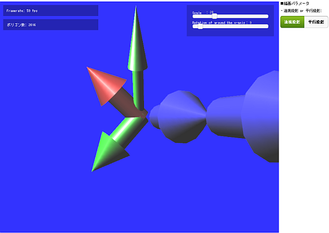
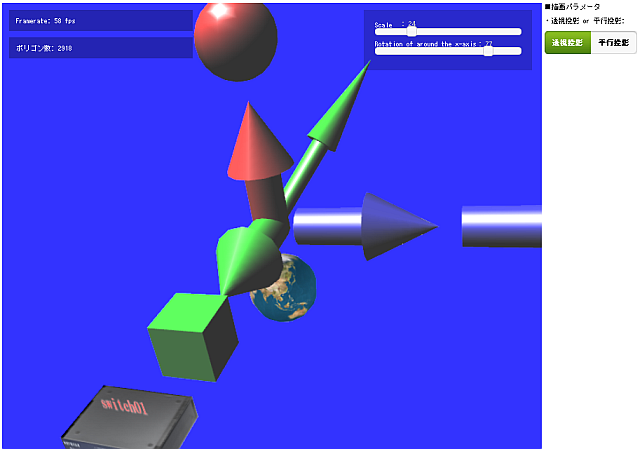
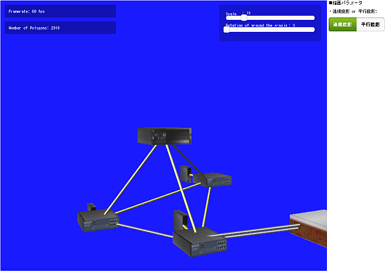
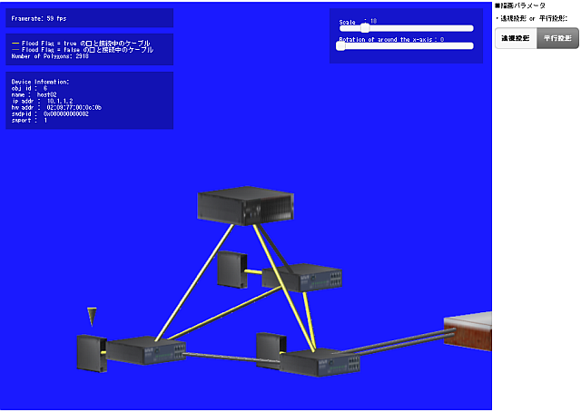
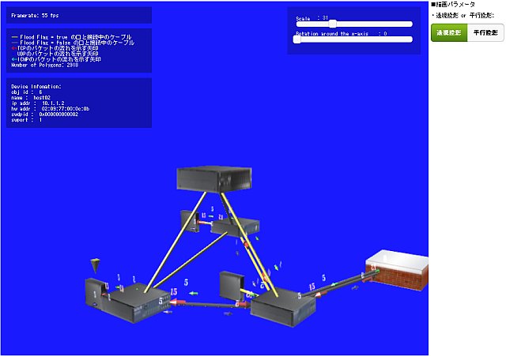
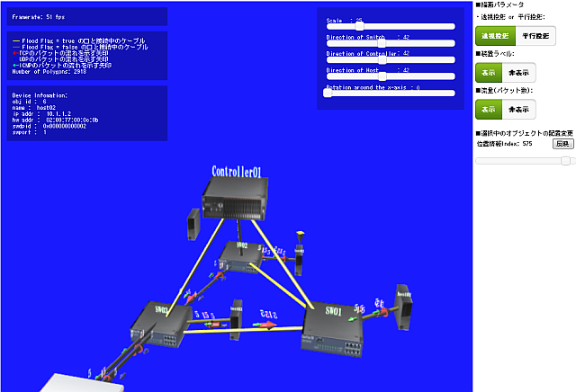

1 Welcome!¶
The glNetViz is a free tool for visualizing computer network topologies with WebGL.
With the abilities of real time visualizing network traffics flowing around the local network and to/from the Internet, you can manage and supervise the various network more easily and efficiently.
1.1 Quick Start¶
1.1.1 Building and Installing¶
To install, run the following commands in the glNetViz directory.
e.g.
$ git clone https://github.com/gpp256/glNetViz.git
$ cd glNetVis
$ ./configure --prefix=/opt/glNetViz
$ make
$ sudo make install
$ sudo chown -R www:www /opt/glNetViz
$ sudo cp /usr/local/etc/apache/httpd.conf{,.backup130506}
$ sudo vi /usr/local/etc/apache/httpd.conf
$ sudo diff /usr/local/etc/apache/httpd.conf{.backup130506,}
315a316,323
> Alias /glNetViz/ /opt/glNetViz/
> <Directory "/opt/glNetViz">
> AllowOverride All
> Options ExecCGI
> Order allow,deny
> Allow from all
> </Directory>
$ sudo /usr/local/etc/rc.d/apache restart
$ sudo vi /opt/glNetViz/.htaccess
1.1.2 Other Dependent Components¶
Some perl modules are needed for starting the glNetViz.
| Component | URL | License |
| CGI | http://search.cpan.org/~markstos/CGI.pm-3.63/lib/CGI.pm | Artistic License 2.0 |
| JSON::PP | http://search.cpan.org/~makamaka/JSON-PP-2.27202/lib/JSON/PP.pm | Artistic License 2.0 |
| YAML | http://search.cpan.org/~mstrout/YAML-0.84/lib/YAML.pm | Artistic License 2.0 |
| ExtUtils::MakeMaker | http://search.cpan.org/~bingos/ExtUtils-MakeMaker-6.66/lib/ExtUtils/MakeMaker.pm | Artistic License 2.0 |
To install some components, run the following commands.
e.g.
Debian GNU/Linux:
$ sudo apt-get install perl-modules
$ sudo apt-get install libyaml-perl
You can access glNetViz sample pages with a web browser that supported WebGL.
e.g.
http://youripaddress/glNetViz/examples/
1.1.3 glNetViz Components¶
| Location | Description |
| docs/* | users manual |
| examples/* | sample scripts and HTML files |
| lib/{js,css,cgi}/* | common libraries and dependent libraries (jQuery , jQuery UI , jquery-sprintf , minMatrix ) |
| lib/textures/* | texture files |
| lib/conf/* | configuration files |
| .htaccess | apache configuration file |
1.2 glNetViz Examples¶
1.2.1 WebGL¶
| Image | Description |
|---|---|
| sample01:  | Left image shows the WebGL Sample Page that was comprised of one shader program.
|
| sample02:  | Left image shows the WebGL Sample Page that was comprised of multi shader programs. |
{kind=link}
{kind=link}
1.2.2 Network Visualization¶
| Image | Description |
|---|---|
| sample03:  | Left image shows a virtual network topology that was generated in an OpenFlow Network.
|
| sample04:  | Left image shows a virtual network topology that was generated in an OpenFlow Network. The sample04 provide the following new functions.
|
| sample05:  | Left image shows a virtual network topology that was generated in an OpenFlow Network. The sample05 provide the following new functions.
|
| sample06:  | Left image shows a virtual network topology that was generated in an OpenFlow Network. The sample06 provide the following new functions.
|
{kind=link}
{kind=link}
{kind=link}
{kind=link}
1.2.4 Application Example¶
This contents is under construction.
- mongoDB + fluentd + glNetViz
- nox + glNetViz
- pox + glNetViz
- trema + glNetViz
- sDashboard + glNetViz
- jqPlot + glNetViz
- Vimage Jail + glNetViz
- Android + PhoneGap + glNetViz
- libgeoip + glNetViz
- Automating Dynamic Malware Analysis
1.3 glNetViz Library Reference¶
This page is under construction.
1.3.1 JavaScript¶
1.3.1.1 glNetViz.generateSphereObjects()¶
Generate sphere objects. The parameters of sphere objects are stored in a sphader program object.
Specification:
glNetViz.generateSphereObjects(program);
// ==============================================
// parameters:
// program: shader programs (object)
//
// returned values : No value is returned.
//
// errors/exceptions: No error is returned.
//
// changelog:
// ==============================================
Usage example:
// create shader programs
var prg = glNetViz.createProgram(v_shader, f_shader);
// create spheres
glNetViz.generateSphereObjects(prg);
(...snip...)
glNetViz.putSphere(
prg.spheres["red"]["v"], prg.spheres["red"]["n"],
prg.spheres["red"]["c"], prg.spheres["red"]["i"],
attLocation, [ 3, 3, 4 ]
);
See Also:
- glNetViz.createProgram()
- glNetViz.putSphere()
1.3.2 Perl¶
1.3.3 Python¶
1.3.4 Ruby¶
1.3.5 C¶
1.3.6 Configuration Files¶
The steps for generating WebGL Pages are as follows.
- create the YAML format data.
1 2 3 4 5 6 7 8 9 10 11 12 13 14 15 16 17 18 19 20 21 22 23 24 25 26 | e.g.
sample03 configuration file:
---
controller_list:
- ipaddr: 192.168.1.4
name: Controller01
origin:
- 0
- 0
- 0
posidx: 0
rad: 0
switch_list:
0x000000000001:
name: SW01
posidx: 199
rad: 5
0x000000000002:
name: SW02
posidx: 259
rad: 5
0x000000000003:
name: SW03
posidx: 498
rad: 5
(...snip...)
|
- refer to the YAML format data from HTML(JavaScript).
1.4 History¶
| Version | Date | Description |
| 0.9.0 | 07-May-2013 | first release. |